An Introduction top
"XO-Blue, A color follower robot that detects and follows blue objects"
Final Prototype of XO-Blue
For the ECE 5760 final project, we designed and built an autonomous robot named XO-Blue that detects and follows blue colored objects. Any blue object in the field of vision of the robot is a potential target. XO-Blue can detect blue at any distance from the camera as long as the hex value of blue resides within the threshold values set in the Verilog code. We have used a video camera that plays the role of the robot’s “eyes” and captures a video in real time. This video is processed in the FPGA where blue color is detected. The Robot then moves in the direction of the Blue colored surface. The movement of the robot is accomplished by using four continuous rotation servos attached at the four corners of a cardboard, which is used as the robot’s chassis.
High Level Design top
The design includes three main components: the video camera, FPGA unit and servo motors. The final design of the robot is shown in the picture below:
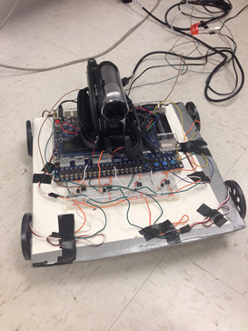
The data read through the video camera is provided to the FPGA in a standard NTSC format. The FPGA processes the video to detect the desired blue color and displays the image on a monitor via VGA channels. Depending on the location of the blue object on the VGA screen, the motors can be actuated. A high-level diagram describing the interaction between the three components described previously is shown below:
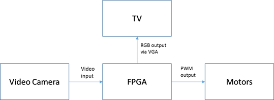
The servo motors are connected to the GPIO pins of the FPGA through an opto-isolator circuitry, which is explained further under the hardware section. We used Altera’s example module DE2_TV as our base design.
Copyrights
We hereby attest that we acknowledged and have listed all the documents used for this project in the reference section of the appendix.
Hardware top
An overview of the modules used in the Altera DE2 FPGA is shown in the figure below:
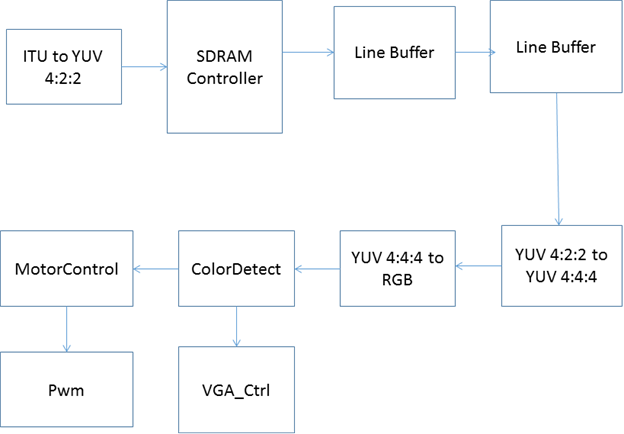
The following modules were already present in the DE2_TV module provided by Altera as a part of their university program.
1. ITU to YUV 4:2:2
This module takes in the data from the video camera in a simple NTSC format and converts it to a YUV 4:2:2. This module is clocked at 27 MHz.
2. SDRAM Controller
The SDRAM controller is used to write the YUV 4:2:2 into the DRAM memory slots. The DRAM Controller is clocked at 108MHz.
3. Line Buffers
Line buffers read the information from the SDRAM controller and delay them by an entire line.
4. YUV 4:2:2 to YUV 4:4:4
This module converts the YCrCb information from the YUV 4:2:2 to the YUV 4:4:4 format.
5. YUV 4:4:4 to RGB
This module converts the YUV 4:4:4 to an RGB format, with 10-bits of each Red, Green and Blue components. The input when directly connected to the VGA_Ctrl module, displays the video image on the VGA monitor. Since we needed to tap the information before displaying the image on the VGA monitor, we decided to use the RGB information from this module and process it before passing it to the VGA_Ctrl.
ColorDetect Module top
The robot has to detect the blue color before following it. Since the RGB components of an item depend extensively on the lighting of the surroundings, we decided to calculate the vector distance of the pixel from blue and compare it against a threshold to decide if the given pixel is blue or not. That is, if the given pixel has [R.G,B] we calculate its vector distance from [0,0,10’h3FFF] using the following formula:
VectorDist = R*R + G*G + (10’h3FFF – B)*(10’h3FFF – B) [reference to Cathy Chen and Matt Meister project in the appendix]
If the value of this vector distance is less than a threshold value TColor , then we assume that the pixel is blue. We calculated the value of TColor by manually adjusting the the hex value in the Verilog code. The value is plugged, computed and the output is observed on the VGA. The previous steps are repeated until the robot is able to detect the color of the desired object. In order to avoid stray blue pixels from being detected, we recognize the object only if 10 adjacent successive pixels were detected to be blue. The moment we are certain that the pixels represent the desired object, X-Coordinate (defined as VGA_X) is captured to determine the direction of the object’s position.
Though we implemented our own design, we borrowed the concept of vector distance for color detection from a 2008, ECE5760 project by Cathy Chen and Matt Meister.
MotorControl Module top
MotorControl module is used to convert the position of the object, in terms of the X-coordinate, to a PWM duty cycle value to actuate the motors. As stated previously, we use continuous rotation servos for robot’s motion. The control signal (PWM input to the servo) determines the direction in which the motor rotates.
If we divide the VGA screen into 3 zones along the X-axis, we get three different directions in which the robot tracks the Blue Object, as shown below:
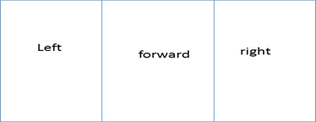
After setting the desired PWM value in the MotorControl module, we generate the actual PWM signal in the pwm.v module.
PWM top
This module is used to generate the PWM signals to actuate the motors. The PWM signals are generated at 4 GPIO pins, which are later connected to the motors through an opto-isolator circuit. The width of the duty cycle for the pwm signals is decided by the MotorControl module. One of the challenges we faced was to synchronize the PWM signals of the 4 motors. We achieved this by using the method of signaling between the two PWM signals.
Motor Circuitry top
Four continuous rotation servos were used to drive the chassis. The servo circuitry is shown in the figure below.
We used the opto-isolator circuit from the 5760 project from 2008 by Cathy Chen and Matt Meister.
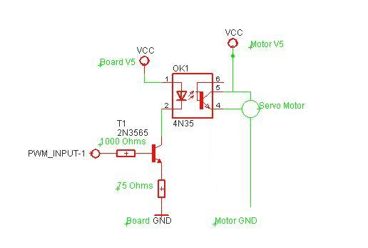
GPIO_0[1] and GPIO_0[3] were used to drive the right back and the right front wheels while GPIO_0[2] and GPIO_0[4] were used to drive the left back and left front wheels.
Results top
Speed of Execution
The motion of the robot is triggered by the pwm module at a clock frequency of 50 MHz and the color of a blue object is detected using the colorDetect module at the VGA clock frequency of 27 MHz. So the robot is very receptive to blue colored objects. Whenever, a blue object A is detected, the robot responds almost instantaneously to the color and starts readjusting its path towards A. The reaction time is in the order of milliseconds. What the robot “sees” is captured by a camera and displayed on a VGA monitor so that the user can keep track of where the robot is going. The video analysis is done in real time. The background of the VGA screen is set to a light transparent blue while the targeted blue object is the only element that maintains its original color on the VGA screen. To get a better grasp of what the VGA screen looks like, hereafter are two photos that show the light blue screen VGA monitor with and without a blue object.
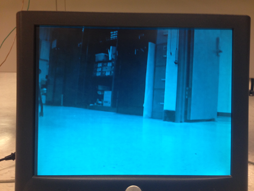
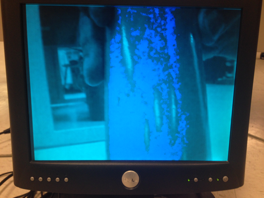
The quality of the Verilog code as well as the resolution quality and field of view of the camera allows the robot to detect any blue object appearing on the VGA screen even though this object may be far from the viewing point. Analogously to humans who have forward-facing eyes, the robot can only detect blue colored objects in front of it. Therefore it can only make 3 decisions for motion when detecting an object in its field of view. It can go straight, turn left at 45 degrees or turn right at 45 degrees.
The robot focuses on the first blue object it detects from the left since the Verilog code was designed that way. Therefore, this constitutes a major difference with human thinking, where the closest object would attract attention rather than scanning blue objects from left to right. Therefore, to test the functionality of the robot, it is essential to put one singular blue object in the field of vision of the robot.
Accuracy top
The robot successfully moves toward the direction of the desired color. Figure 1 shows the field of vision of the robot as displayed on the VGA screen. The robot moves forward if it detects the blue object in zone 2 of the VGA screen as indicated in the table 1 and figure 1. XO-Blue moves left by 45 degrees if it detects the object in zone 1 and it turns right by 45 degrees when the blue object is situated in zone 3.
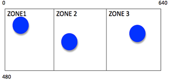
|
Location of blue object on screen |
Robot displacement |
|
ZONE 1 |
Rotate 45 degrees left |
|
ZONE 2 |
Move forward |
|
ZONE 3 |
Rotate 45 degrees right |
The robot has the ability to recalculate the position of the blue object and changes direction accordingly whenever the location of the target is changed. So XO-Blue adjusts its trajectory based on the position of the target at any moment.
The motion of robot could be made more accurate by adding more angle rotations instead of just 45 degrees left and right. The robot could rotate every 5 degrees for example. This could easily be implemented on Verilog using a state machine.
The angle of rotation is decided in Verilog by the time it takes for the wheels to rotate. Therefore, this part was tested visually. We drew 45 degrees angle on the ground and estimated the time it takes for the wheels to rotate at the desired angle.
All input and output signals coming out of the I/O pins of the FPGA and the servo circuits were verified using the oscilloscope.
Testing and Issues top
Part 1: Changing Projects
The first idea for the ECE 5760 final project was very different from XO-Blue design. Initially, the purpose was to design a 3D real time video. Anaglyph 3D glasses would be used to visualize the 3D image on the VGA monitor. Many issues were confronted during the design and we highly encourage people to pursue this cool project in the future even if it may be tricky. Due to lack of time, the decision was made to stop debugging the code and investigating the 3D project to move on to a project that will be achieved in its entirety by the due date. Hereafter is a description of the achievements and steps undertaken for the 3D stereo with mirrors. 4 mirrors were assembled as shown in figure to create a Digital Stereo.
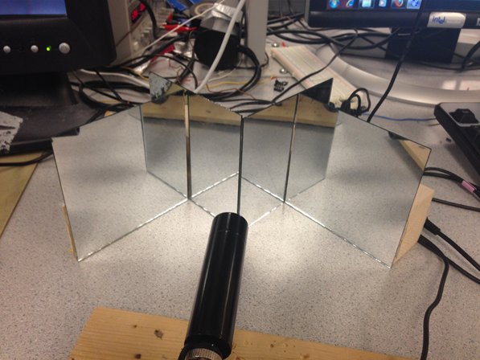
The purpose was to split the image captured by the camera in 2 identical images as shown in figure.
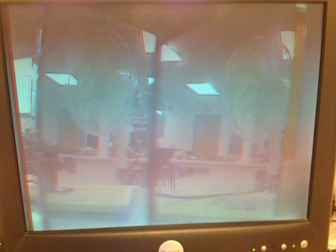
This step was achieved successfully after adjusting the mirrors until obtaining a satisfying image that splits in the middle of the VGA screen.
The plan was to write a code on Verilog that colors the left half of the VGA screen red and the right part blue. Then, the 2 identical images of different colors would be superimposed to create a 3D effect.
To superimpose the images, the idea was to use SRAM to store red and blue pixels situated in the left and right part of the screen respectively. Then, the red and blue pixels would be placed alternatively on the VGA screen from left to right. All red pixels would be placed in even positions while all blue pixels would be placed in odd positions. The problem was a sync problem between VGA and SRAM so the image was flickering so much that it was impossible to discern the picture. Since we thought the problem might be coming from SRAM implementation, we decided to use simple registers to store blue and red pixels. However, the same problem was confronted again. It was complicated to determine the source of the problem since the code we wrote was very basic. And since we used as a base code the DE2-TV module available in the DE2 Board package, we think the solution may be to modify the VGA_Ctrl module.
Even if we confronted all these problems, we came up with another solution, which is to alternate between red and blue frames at a high rate in order to generate a 3D image. This goes without saying that the blue frame should be a little shifted from the red frame. This design worked successfully and gave an image that goes into the screen. The final 3D image is shown in the figure below:
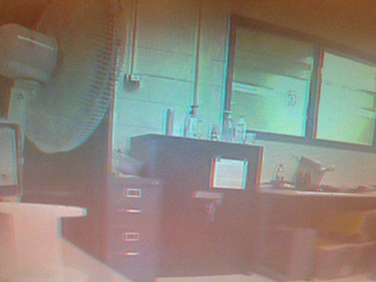
However, this solution doesn’t satisfy the original purpose of making a single object in 3D since the entire frame is made in 3D.
Part 2: XO-Blue Challenges
First, a cheap low-resolution camera was used to detect the desired color. But colors displayed on the VGA screen were very inaccurate and not representative of reality. Therefore, it was very hard to set the threshold color in the Verilog code. For this reason, a better quality camera available in lab was selected.
After getting the camera to work with the color detection module, it was time to build the robot. A PWM module was created to drive 2 servo motors. Before connecting the motors to the GPIO pins of the FPGA, it is fundamental to build the appropriate circuits to be able to rotate the wheels both clockwise and anticlockwise. The circuits needed to be verified multiple times to get the desired PWM output. This output of the servo circuit was checked using the oscilloscope. The oscilloscope terminals were connected to ground and pin 4 of the optocoupler. The PWM wave is shown on figure.
The last difficulties confronted in the design was wiring and making the robot autonomous. In order to avoid tangling of the robot in the wires, it is necessary to make the circuits neat as well as make wires connecting supply voltage, VGA monitor and FPGA long enough so that the robot is able to move freely. All circuits as well as the FPGA and camera have to be mounted on XO-Blue so that it is autonomous. However, with just 2 motors, the camera and FPGA were too heavy for the wheels to rotate. Solving this issue required two additional servos to the design. The robot is now able to move at the desired speed without interruption.
Safety
The robot as well as the procedures to build it are very safe. The voltage used doesn't exceed 6 Volts and the current needed is below 3 amps. With such low ratings for current and voltage, the user is safe from harm. All wires and circuits are isolated and mounted on the chassis of the robot to enable the user to modify circuitry when needed. The circuits are neat so that if the designer or user wants to make modifications to the circuit, it would be safe and easy.
Usability
XO-Blue was mainly designed for tracking specific colors. The procedure is fairly simple; put XO-Blue on the ground and let it detect your colored object. This robot has the potential to track small objects that are hard to identify since it has a very high sensitivity to targeted colors.
Conclusions top
Did Our Design Meet Expectations?
XO-Blue met the expectations knowing that he follows the desired color instructed by the Verilog code, which is blue. It is able to readjust its position to a position of the object to follow. However, the robot turns only at pre-defined angles, which make the motion less accurate. The robot’s detection of the color is fairly accurate while its displacement precision could be increased. This would mean adding more states in the state machine responsible of the motor rotation. The blue object detected by XO-Robot is displayed on the VGA and retains its original dark blue color while the background of the VGA is painted light blue.
XO-Blue has a lot of potential improvement that we would have been thrilled to implement. Here are some ideas to implement in the future. We wanted to write a program that would compute the distance from the robot to the blue object and based on that distance, the robot would decide if it reached its target. Have the robot follow a shapes rather than colors. Another very cool feature would be to make the robot follow light. This would be based on intensity rather than color so YCrCb is crucial for this approach. Since we wanted to finish the project in time, we restricted our objectives to blue color detection.
This project was very fun. We learned so much about hardware especially timing and SRAM. We also learned the importance of time management and setting a whole plan before buying hardware or starting the coding. There was no restriction in the budget for this project but we still tried to minimize our expenses. The tools we bought are 4 mirrors, wood and 2 motors.
Did Our Design Conform to Standards?
The Verilog code in our project abides by the IEEE 1364-2001 Standard. As engineers who design with Verilog, we received many benefits from the enhancements brought by Verilog-2001.
Intellectual Property
The design and implementation of this project was based on the knowledge we acquired from ECE 4760 at Cornell University as well as the project developed by Cathy Chen and Matt Meister for ECE 5760 in year 2008. The project is called “BALL-E: The The FPGA Autonomous Robot”. We thought that Cathy’s and Matt’s idea was cool and appropriate for our case since we already had a lot of experience with robots and servo motors. Their webpage for the project is listed in the references under the Appendix. We would like to give them credit for the color detection algorithm based on vector distance as well as their robot’s set up. The distance formula has a color threshold that enables the program to compare the targeted object color to the constant reference color. On the VGA, the screen is colored grey while a red object that their robot follows is colored red inside of a box.
However, we came up with a totally different algorithm that determines how the robot uses the detected color for motion. We designed the code for pwm and motor motion. Our program also uses DE2_TV as a basis for VGA control and interaction with SRAM. DE2_TV module is included in the DE2 board CD and has been listed under references in the appendix. We used the datasheets of components such as the parallax motors and 4N35, which are attached to this report in the appendix section.
We used the website template from the Fall 2013 project named Clap-E Robot design by Tejaswini Srinivasa and Asmaa M’nebhi. The link to the website is included in the appendix. We welcome any ECE 4760 project groups to use our project’s code or ideas for their final project as long as they mention intellectual property. We hope that you will make good usage of XO-Blue and give him more interesting features such as shape detection.
Ethical Considerations
The color following robot project is consistent with the IEEE Code of Ethics and does not harm one’s health, or safety or welfare of the public. It does not endanger the environment and is even made by recycling cardboard. We used all lab equipment accordingly with safety procedures. We are honest and realistic in all claims and data estimates we made in both this report and while working on this project. The color detection is done using a camera and VGA and the motor control is done using servo circuits and pwm. We seek, accept and offer honest criticism of technical work and credit properly the papers, projects and codes made by others. The references are all attached in the appendix of this report.
We also assisted classmates in their project when they had questions about our project or more general questions about certain tools used in the ECE 5760 class. We would like to thank Professor Bruce Land for all the help he has provided us with throughout this project as well as our previous 3D project.
Legal Considerations
There are no legal considerations for our project. All documentation and previous work used for this project have been properly cited in the appendix. Our project does not endanger or harm any individual or being. We do not plan to pursue patent at this time.
Acknowledgements top
We would like to acknowledge and thank Professor Bruce Land for helping us throughout this project and helping us find a name suitable for our robot. We would also like to acknowledge the SPRING 2014 TAs for their support.